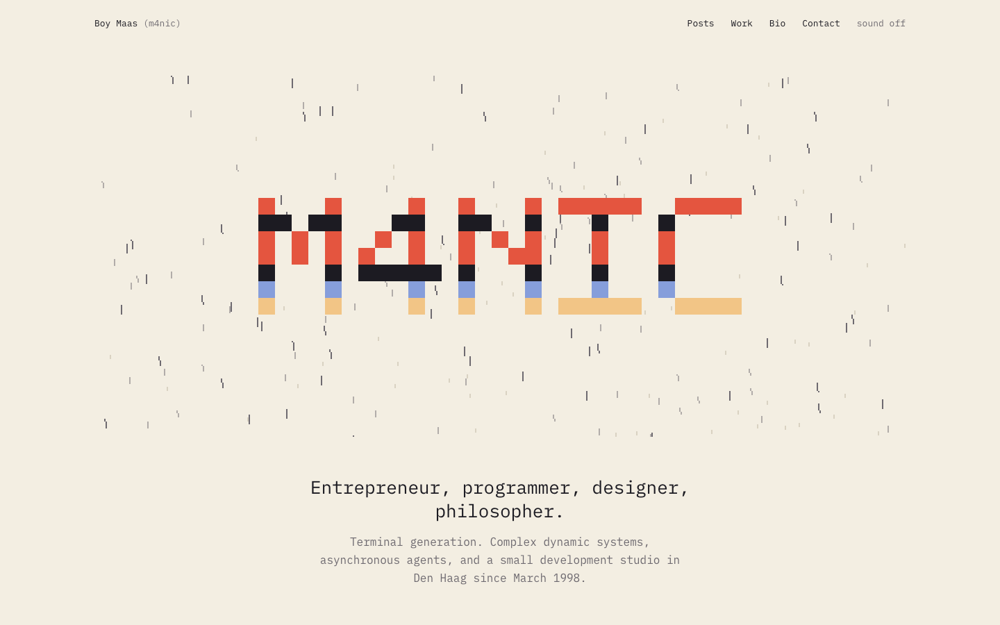
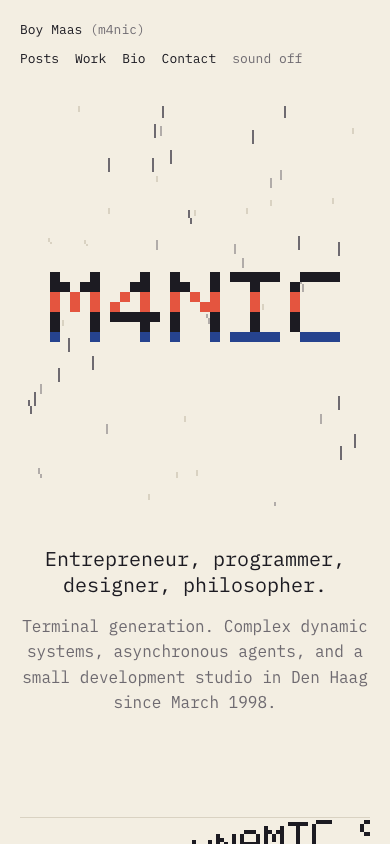
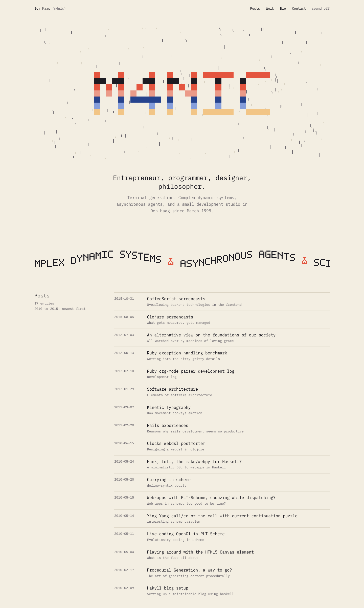
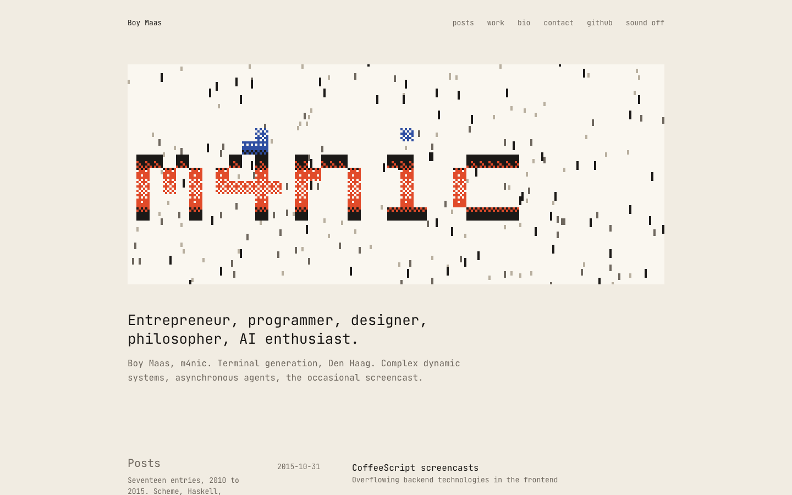
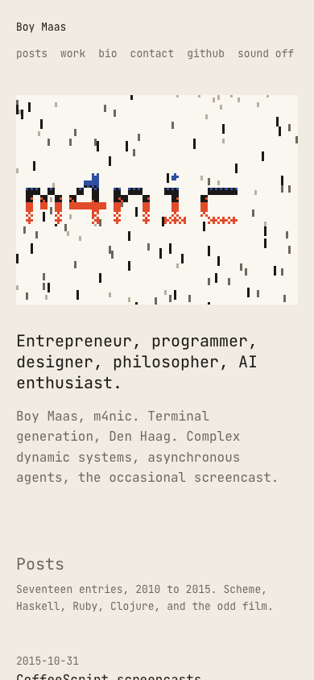
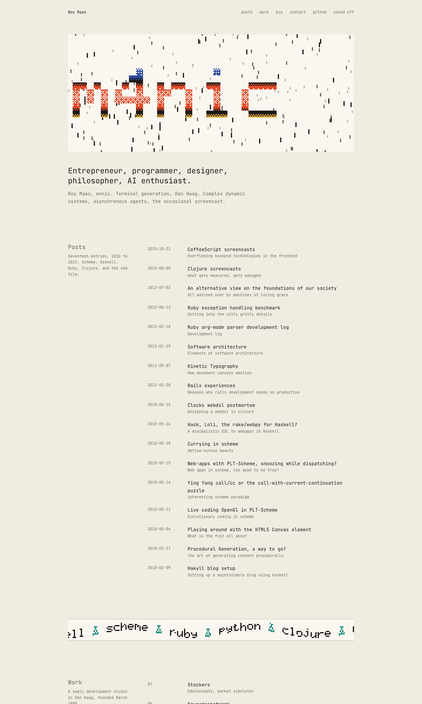
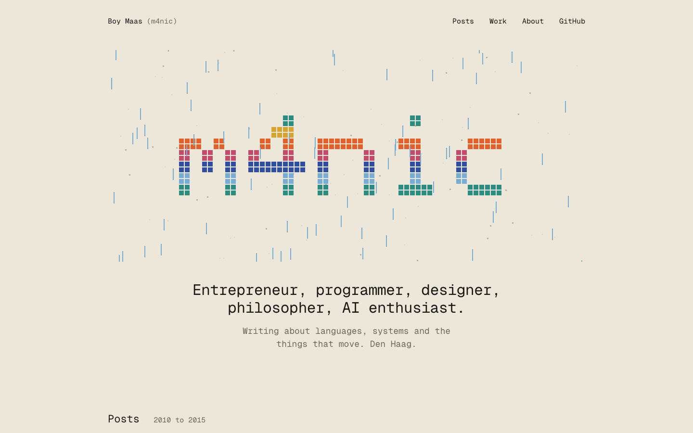
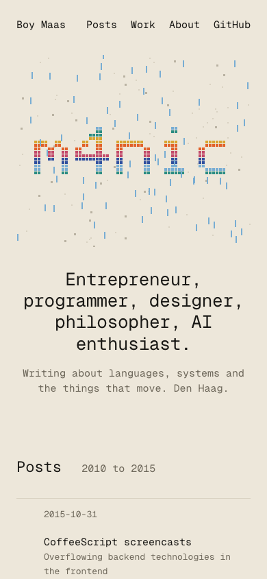
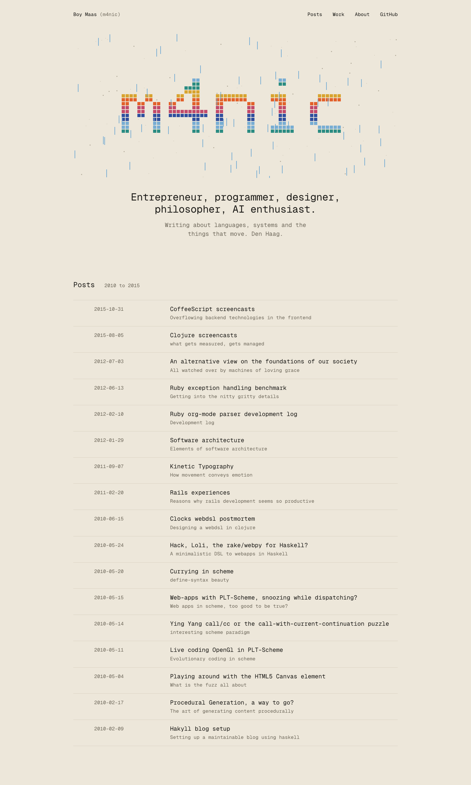

boymaas.nl atelier, round three: demoscene as material, Omarchy as composition
All three converged on one composition: a calm paper ground, a pixel m4nic logo raster-filled and rained on, then a clean dated list. They differ in palette, texture, and which effects wake up. Click a title to open the live page; move the cursor through the hero, hover the post rows, and leave a page alone for a while to see its attract mode. Sound is off until you switch it on.
Earlier rounds: 4 Amiga megademo 5 DOS SCUMM room 6 demo party 1992 1 2 3
7. Copper rain on cream
Warm cream, IBM Plex Mono. The logo is a solid pixel M4NIC filled with eight mirrored copper bars; the rain is ink-monochrome so the logo is the only colour. A sine-scroller divider carries the loves with a coral flask between them. The portrait is dithered to ink and cobalt and rains apart on hover. After 21 seconds idle the logo particles morph into a meditating figure. Secret: type m4nic.


full page

8. Riso sheet
Bone paper, JetBrains Mono, riso inks: cobalt, vermilion, mustard, teal. Every tone is a Bayer dither of two inks, so the logo has a printed texture. Each effect is held inside its own lighter sheet, which gives the hero a boundary. A glenz cube docks in the gutter beside the row you hover. The scroller carries the languages with a teal flask. Attract mode after 16 seconds; secret: type m4nic, or click the Mercury glyph in the footer, for a rotozoom sigil.


full page

9. Paper, copper, rain
Warm paper, Geist Mono, six colours: blue, sky, teal, mustard, orange, rose. The logo is a pool of 310 particles that forms a lowercase m4nic, raster-filled with rolling copper bars, and the cursor pushes the particles. Blue rain and a parallax starfield behind it. After 7 seconds idle the particles fly into a seated meditating figure waving as a dot flag. A dithered plasma wakes in the tile of the hovered row. Secret: the Konami code.


full page
